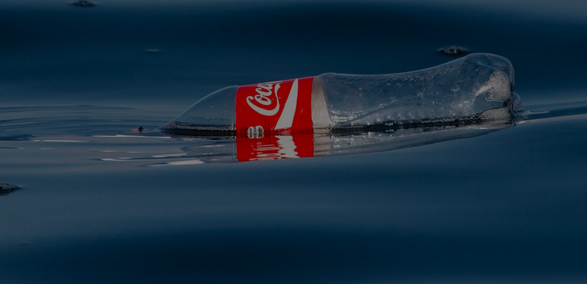
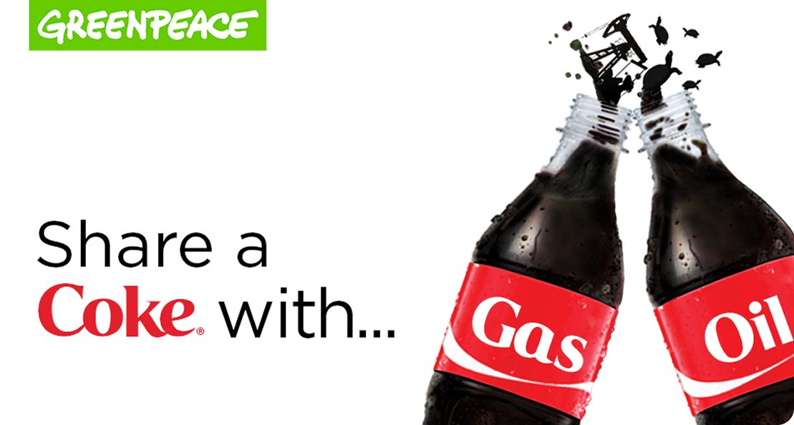
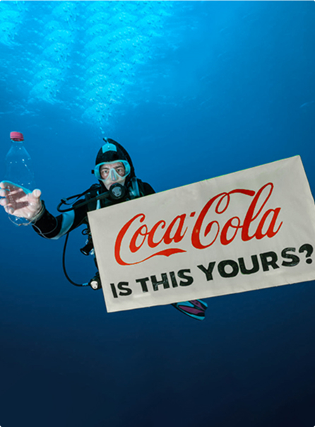
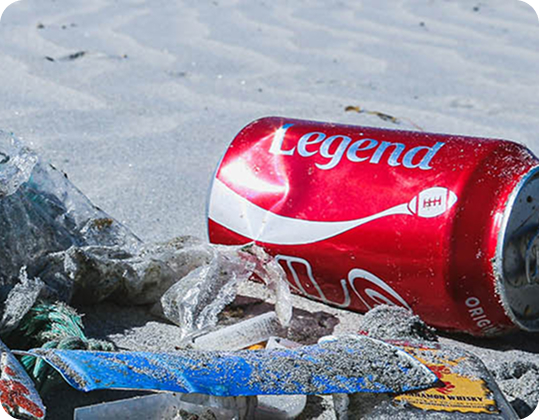
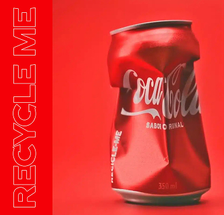

Le critiche
sull'ambiente
Coca-Cola contro
l'ambiente?
L’impatto ambientale di Coca-Cola, tra inquinamento da plastica, consumo di risorse idriche ed emissioni, e sulle iniziative e controversie legate al suo percorso di innovazione, che procede verso la sostenibilità.

Plastica e inquinamento globale.
Una delle principali critiche rivolte a Coca-Cola riguarda il suo ruolo nella produzione di plastica monouso. Secondo Greenpeace, l’azienda è tra i maggiori responsabili della diffusione dei rifiuti plastici a livello globale, con miliardi di bottiglie immesse ogni anno sul mercato. Un articolo di Greenpeace Aotearoa evidenzia come questo modello contribuisca direttamente all’inquinamento degli oceani mentre Greenpeace Canada sottolinea che le iniziative dell’azienda non affrontano il problema alla radice, concentrandosi sul riciclo più che sulla riduzione della plastica. Anche report indipendenti come quelli di Break Free From Plastic confermano questa posizione, indicando Coca-Cola come uno dei principali “inquinatori globali” sulla base di audit internazionali sui rifiuti.
Un’altra critica centrale riguarda il fenomeno del greenwashing. Organizzazioni come BEUC hanno denunciato l’uso di espressioni come “100% riciclabile”, considerate potenzialmente fuorvianti. Secondo le dichiarazioni ufficiali riportate dal BEUC, tali messaggi possono indurre i consumatori a credere che il prodotto sia completamente sostenibile quando in realtà il riciclo dipende da fattori esterni. A seguito di queste pressioni, come riportato da ESG Today e OneStopESG, Coca-Cola ha promesso maggiore trasparenza. Questo evidenzia una difficoltà più ampia del marketing contemporaneo: comunicare la sostenibilità senza semplificare eccessivamente temi complessi.

Uso dell’acqua e impatti locali.
Negli ultimi anni, Coca-Cola ha aggiornato i propri obiettivi ambientali, ma alcune modifiche sono state interpretate come un ridimensionamento degli impegni. Un articolo di Packaging Dive evidenzia come l’azienda abbia spostato alcuni target dal 2030 al 2035, suscitando critiche da parte di osservatori e ambientalisti. Anche analisi pubblicate su Plasticstoday riportano reazioni negative, interpretando questi cambiamenti come una riduzione dell’ambizione. Tuttavia, Coca-Cola sostiene di continuare a migliorare le proprie performance ambientali, evidenziando progressi nel riciclo e nell’uso di materiali alternativi.
Un ulteriore ambito di critica riguarda l’utilizzo delle risorse idriche, soprattutto nei paesi in via di sviluppo. In contesti come l’India, Coca-Cola è stata accusata da comunità locali di contribuire alla riduzione delle risorse idriche disponibili, generando proteste e dibattiti pubblici. Sebbene alcune accuse siano state contestate o risolte, il tema resta centrale nelle analisi sull’impatto ambientale delle multinazionali, evidenziando le difficoltà di bilanciare produzione industriale e sostenibilità locale.
Dibattito contemporaneo.
Le critiche ambientali hanno influenzato anche la percezione pubblica del brand. Secondo articoli pubblicati su piattaforme come Yahoo News, una parte dei consumatori ha espresso preoccupazione per l’impatto ambientale dell’azienda, arrivando a promuovere campagne di sensibilizzazione e, in alcuni casi, boicottaggi.
Nel complesso, il caso di Coca-Cola mostra come la sostenibilità sia oggi una sfida complessa: da un lato l’azienda ha avviato iniziative per migliorare il proprio impatto, dall’altro molte organizzazioni ritengono questi sforzi ancora insufficienti. Ne emerge un dibattito aperto che riflette le difficoltà delle grandi aziende nel rispondere alle crescenti aspettative ambientali della società.


Sostenibilità e futuro
Tutto ebbe inizio nel pomeriggio dell'8 maggio 1886, ad Atlanta, nel retrobottega della Jacobs’ Pharmacy. Il dottor John Stith Pemberton, un farmacista locale con un passato da veterano di guerra, stava lavorando alla creazione di uno sciroppo tonico che potesse offrire sollievo dai mali comuni dell'epoca, come l'esaurimento nervoso e il mal di testa.
scopri di più